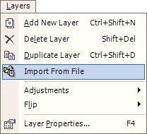
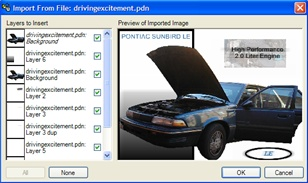
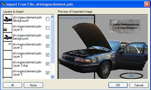
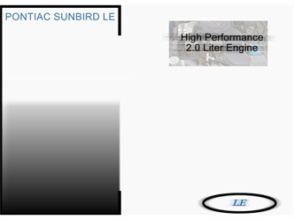

Import From File
|
 The Import From File feature may be accessed from the Layers -> Import From File menu item. Use the Import From File feature to add any number of layers to your current image document. |
|
 |
Shown on the left is the dialog for
the Import From File feature. By default, layers are selected based on
their visibility status in the file used for import. Layers may be
deselected or selected for import by toggling the checkbox located to the right
of the respective layer.
Tips: to easily select one layer from a document containing many layers, click the None button followed by a toggle of the checkbox to the right of the desired layer. To select all layers for import, click the All button. |
|
 |
The dialog to the left shows the previous import operation less the Background layer. Note that the checkbox to the right of the Background layer does not have a check inside. |
| Before Import | After Import |
|
 |